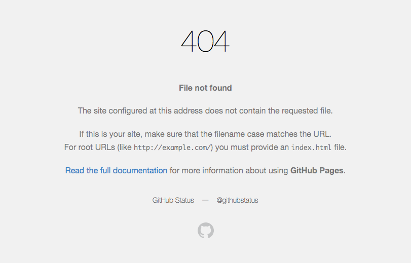

hexo で 404 File not found
blog のトップページなどから日本語タイトルのリンクをたどると 404 になることがあった。

発生条件
調べてわかった条件。
- MacOSX 上で記事を作成する。かつ
hexo newで、濁点・半濁点を使ったタイトルをつける。かつhexo genした記事を MacOSX 以外にアップして blog を表示した場合。
例えば MacOSX 上で
|
|
などすると「じ」が濁点付きの文字なので、これを gh-pages にアップしてみるとリンクが 404 になる。なお、
|
|
などして、MacOSX 上で確認すると問題ない。
原因
自分は知らなかったが、結構有名な NFD(Normalization Form D) の問題だった。
これは、Unicode による文字の正規化の種類の話で、以下のようなものがある(他にも NFKD NFKC などがある)。
- NFD: 濁点・半濁点がついた
じなどの文字をし+”の組み合わせで表す - NFC: 濁点・半濁点がついた
じなどの文字をじ単体で表す
MacOSX で使用されているファイルシステム HFS+ は、日本語ファイル名の正規化に NFD を使用しているが、Linux や Windows は NFC が使われている。
MacOSX 上で hexo gen すると source/_post 配下のファイル名は NFD になっているため index.html 内にあるタイトルのリンクも NFD になる。
その後、hexo deploy などで Linux 系のサーバ(Github など)にデプロイすると、Linux 上のファイル名が NFC になるので、リンク(NFD)とファイル名(NFC)が違って 404 になってしまう。
対処
deploy する際に、NFD -> NFC の変換をかけてやれば良い。が、うまい方法を見つけられなかった。
iconv や nkf は変換に対応しているが、記事のファイルは、タイトルが NFD、それ以外 NFC といったように混在しているため、実際に iconv で変換してみるとエラーになるものがあった。
また、以下のような変換を、hexo のプラグインとして作成できればベストだが、プラグラミングの能力がかなり低いので無理。
http://tsuyobi.heteml.jp/html/tools/nfd2nfc/
よって、かなりベタベタな sed で対応した。このようなダサいスクリプトを作成し、hexo deploy 時に実行されるよう js を修正。
|
|
これで、hexo gen するたびに濁点・半濁点のついた文字が NFC になるので、404 がなくなった。ダサいスクリプトについては、誰か助けてください。
2015/06/28 追記
助けてくれました。こちらの記事でどうぞ。
hexo の 404 File not found さようなら